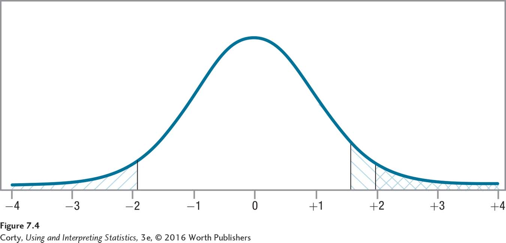

Figure 7.6: Figure 7.4 Comparing Rare Zones for One-Tailed and Two-Tailed Tests The rare zone of the sampling distribution of t with df = 140 and α = .05 for a one-tailed test is the section marked \\\ to the right of t = 1.656. For a two-tailed test, if the difference between the sample and population mean falls in the same direction, it is the area marked /// to the right of t = 1.977 (The rare zone for the two-tailed test also includes the /// area on the left). Notice the area of the rare zone is larger for the one-tailed test on one side of the curve, making it that much easier to reject the null hypothesis for a one-tailed test.